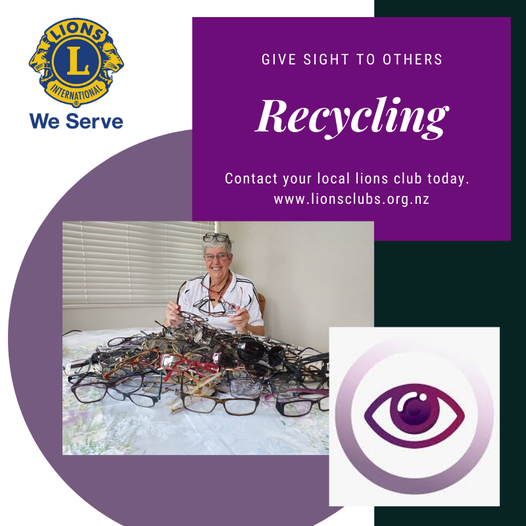

Eco-Initiatives
Here at Howick Village Optometrists we all believe in caring for our beautiful environment and reducing as much waste as possible. We strive to make it easier for ourselves and our clients to take part in eco-initiatives to help care for our planet.
We ensure that we recycle as much as we can in our practice, including paperwork, cardboard and general recycling.
We also accept old glasses and contact lens waste in collaboration with our partners:

Recycling Old Glasses
We have teamed up with Lions Clubs New Zealand as a collector for their Recycle for Sight program. Many homes have pairs of spectacles that are no longer being used, that pair of spectacles can change another person’s life.
The Recycle for Sight is an excellent program that takes spectacles that are no longer needed to the Volunteer Ophthalmologist Services Overseas (VOSO) for distribution to those with poor eyesight in the Pacific Islands.
Feel free to drop any old spectacles that you are no longer using and we will pass them along to this great initiative.
Recycling Contact Lenses
One of our contact lens suppliers, Bausch + Lomb, has a contact lens recycling program with the intent of reducing landfill waste.
While your cardboard boxes are able to be recycled in your at-home recycling bins, we are able to take all of the other contact lens waste, including:
- Opened contact lens blister packs
- Top foil
- Contact lenses
Never dispose of your contact lenses down the sink, they can end up as microplastics in our oceans and not handled well by sewage treatment systems.
Eco Spectacles
We always love bringing the latest spectacle fashions and trends to the heart of Howick. We have recently onboarded more eco-conscious brands.
Dragon
Dragon Alliance uses Plant Based Resin in their eco range, a smarter and much cleaner alternative to standard petroleum-based products. Castor bean oil is both a highly resilient and renewable resource. They are all about keeping our oceans cleaner for some better surfing!
OTIS
OTIS Eco-Acetate addresses both the beginning and end of your spectacles life. Using raw material sourcing (cotton seeds and wood pulp) to create beautiful and functional frames. Once the spectacles have ended their practical use, OTIS is able to recycle different parts, including decomposing the Eco-Acetate frame!